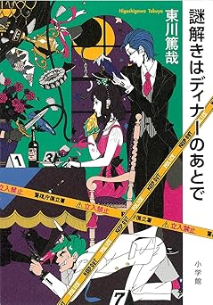

謎解きはディナーのあとで
概要
執事とお嬢様刑事が、6つの事件を名推理!
ミステリ界に新たなヒーロー誕生! 主人公は、国立署の新米警部である宝生麗子ですが、彼女と事件の話をするうちに真犯人を特定するのは、なんと日本初!?の安楽椅子探偵、執事の影山です。
彼は、いくつもの企業を擁する世界的に有名な「宝生グループ」、宝生家のお嬢様麗子のお抱え運転手です。本当は、プロの探偵か野球選手になりたかったという影山は、謎を解明しない麗子に時に容赦ない暴言を吐きながら、事件の核心に迫っていきます。
本格ものの謎解きを満喫でき、ユーモアたっぷりのふたりの掛け合いが楽しい連作ミステリです。

感想
学校の図書館にあったのですが、好きすぎて2~3か月返却と借りるを繰り返していた記憶があります。ドラマも見ました。
登場人物の掛け合いが面白く、テンポ感も良くてとても読みやすいです。